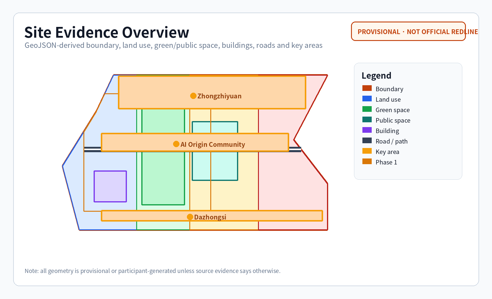
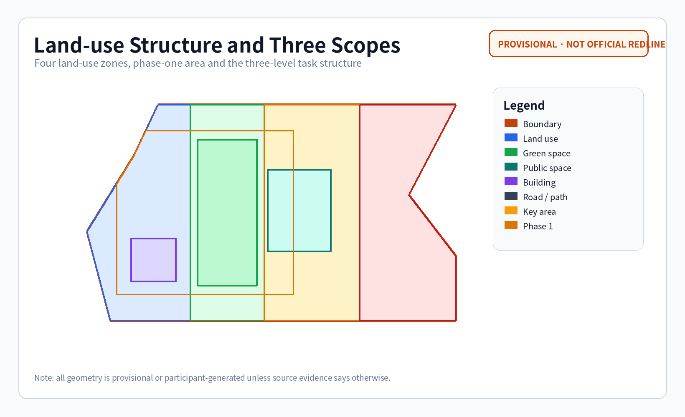
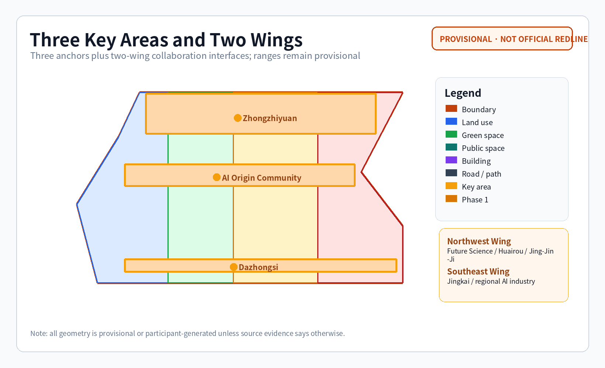
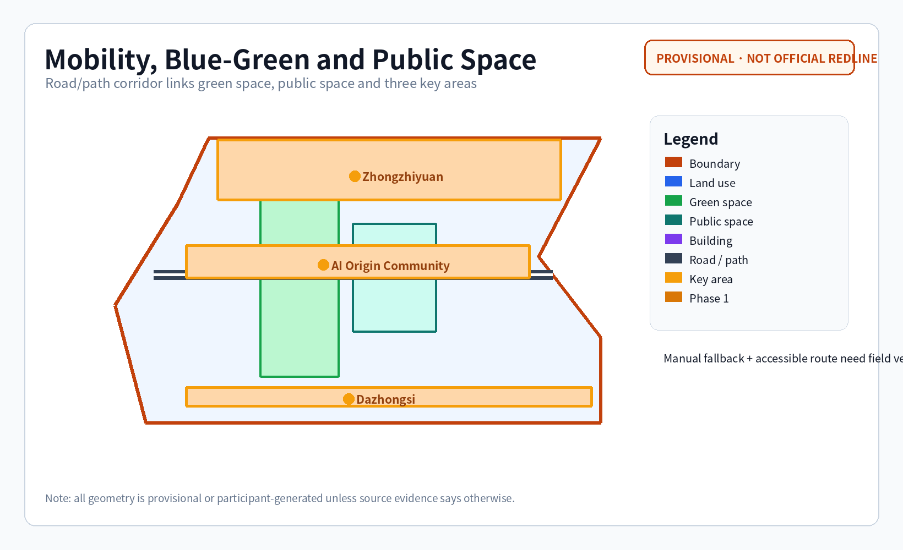
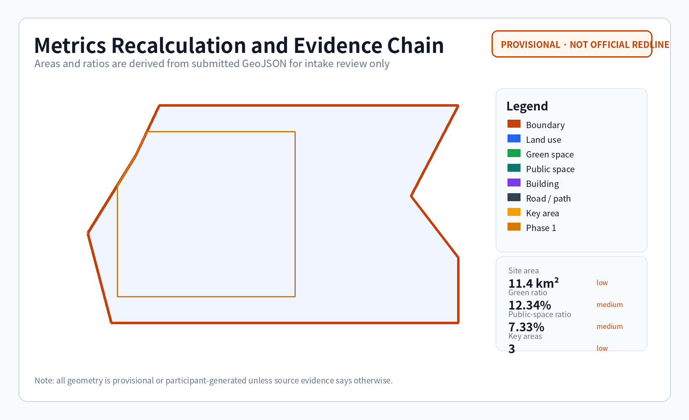

Scenario evidence cards
Open-source hall | Place: Zhongzhiyuan | Data: agenda/evaluation | Review: human confirmation | KPI: events/participation
Safety-governance sandbox | Place: Zhongzhiyuan | Data: authorized test data | Review: safety expert | KPI: closure rate
Edge-compute stop | Place: AI Origin Community | Data: energy/device status | Review: operator | KPI: uptime
AI walking navigation | Place: Jing-Zhang path | Data: public road + field check | Review: on-site check | KPI: fewer accessibility gaps
Dazhongsi roadshow lounge | Place: Dazhongsi | Data: bookings | Review: operator | KPI: leads
Qinghe low-carbon corridor | Place: green/public space | Data: aggregated environment/flow | Review: community rep | KPI: satisfaction
Near-campus transfer street | Place: AI Origin Community | Data: university-enterprise needs | Review: partners | KPI: matches
Data-governance salon | Place: Dazhongsi | Data: authorized catalogue | Review: data steward | KPI: compliant datasets
AI daily-service street | Place: community service zone | Data: service requests | Review: service window | KPI: fallback response
Global AI activity route | Place: three anchors | Data: permits/safety plan | Review: event owner | KPI: zero safety incident
Sources and limits
External cases are comparative references only. This page loads no CDN, map tiles, remote scripts, external fonts, APIs, forms or iframes.